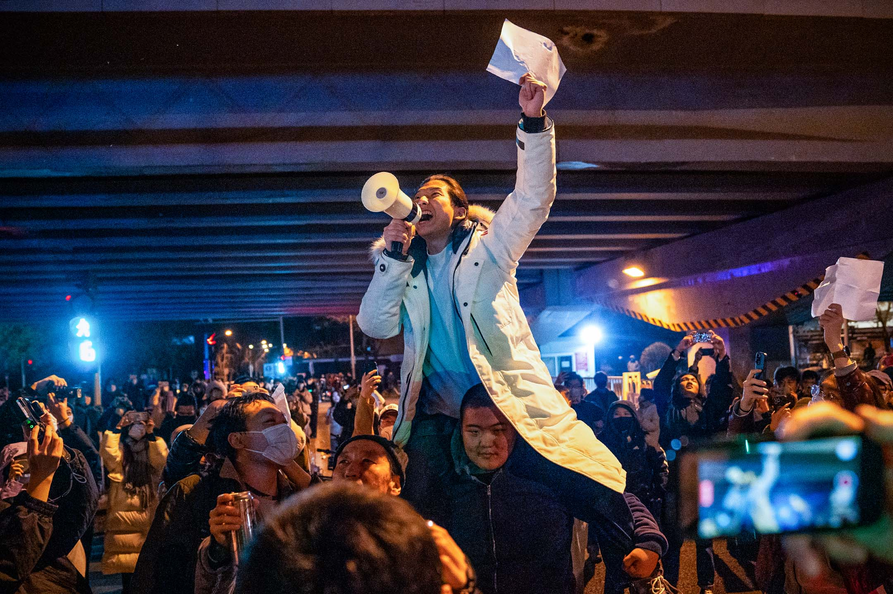
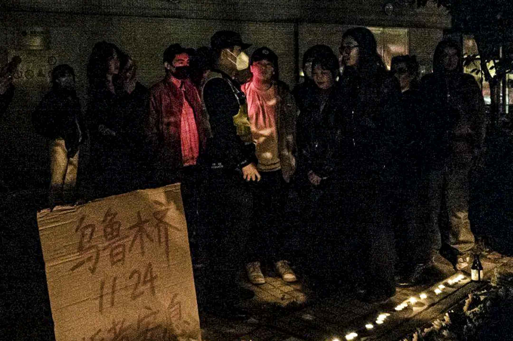
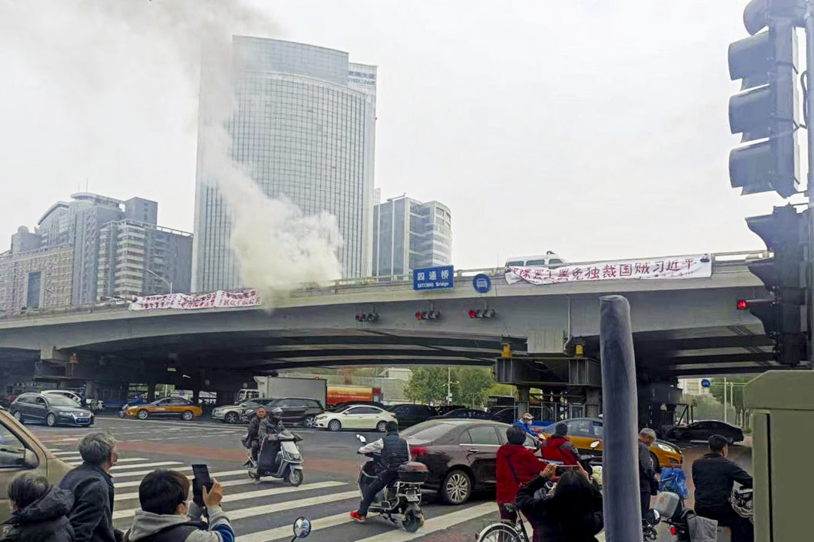
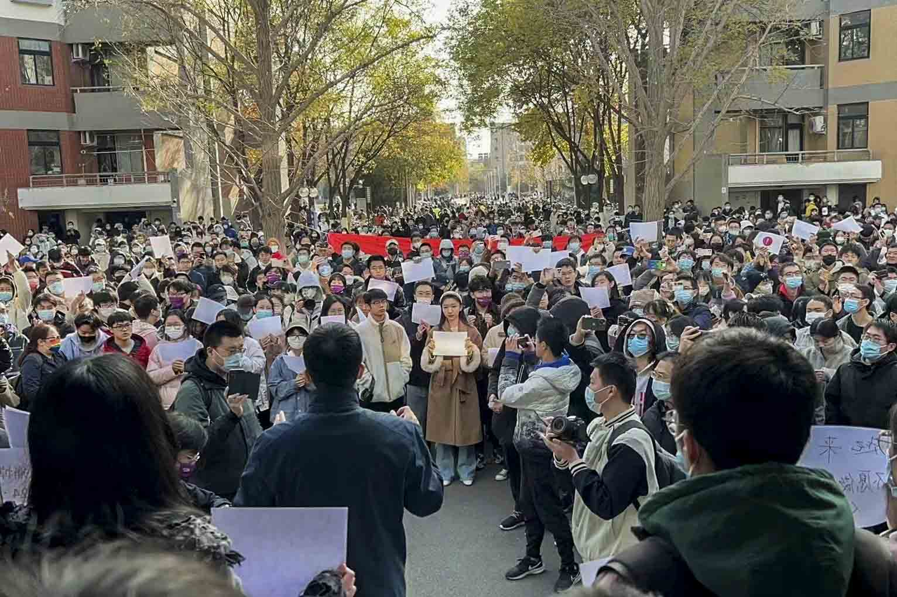
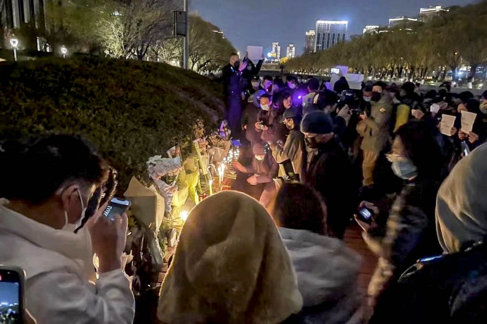
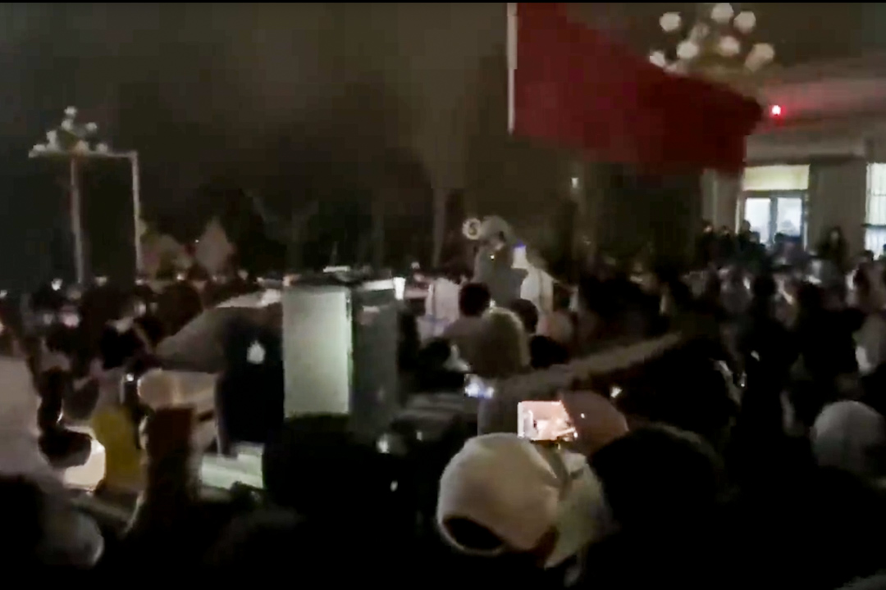
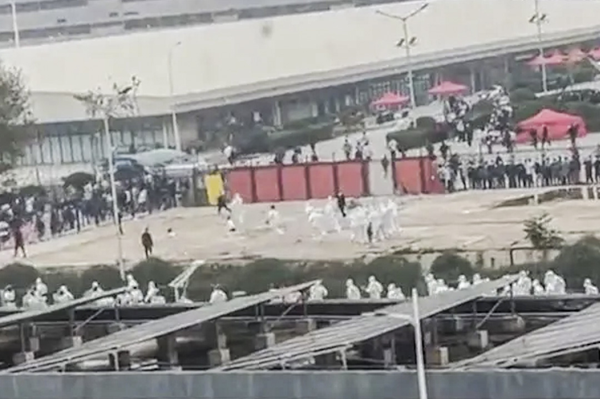

從負到零的中國抗議：如果轉折點沒有來，是因為現在才是開始｜端傳媒 Initium Media
Table of Contents
眼下運動持續三天，已經超乎所有人預期。

Figure 1: 2022年11月28日，北京的示威活動中，一名示威者舉著白紙並高喊口號。在街頭和大學校園，反對封控的抗議蔓延中國各地。圖：Bloomberg via Getty Images
鄭昶人
刊登於 2022-11-28
僅僅一個週末，烏魯木齊某大樓因封控導致火災救援不及致10人死亡事件，已經在烏魯木齊、北京、上海、武漢、成都等多個城市引發市民上街抗議活動，並有過半省的當地高校大學生組織同學進行各種針對封控的抗議，情勢擴散非常迅猛。
過去對中國民眾的認知一般是缺乏政治行動的意識、條件和經驗，雖然三年防疫令人疲憊，民怨也見積累，但這樣形式的爆發，出乎所有人意料。相關信息不 斷被刪，網絡上形成信息接力；所有抗議活動也必然要遭遇國家機器，但這並未形成對民眾的阻嚇。人們驚訝地看到兩天內民意沸騰，而個別當地也以局部解封的措 施來回應民意。
起初各地還是中國特色的策略性標語如「為人民服務」，隨後是南京傳媒學院大學生「國家要為這一切負責」的反擊，到26日的上海深夜，一場悼念活動升 級成抗議中，是「不要獨裁要自由」、「共產黨下台」、「習近平下台」的直白。這恰恰回應著一個月前、中共二十大召開前一日，北京四通橋上的抗議者「不要封 控要自由」、「罷課罷工罷免獨裁國賊習近平」的控訴。
對生活失落的不滿也在這場抗議裏。「中國電影已死」的口號出現，疫情加審查導致電影行業生態沒落扭曲，電影院陸續倒閉，今年九成以上的電影是主旋律 電影。另外，要求「新聞自由、言論自由」也是三年多來更大面積的管控及污染的信息環境下少見的表態，過去幾年，「謠言」幾乎要成為靠近真相的唯一方式。
從兩年前的李文亮，到今年的四月之聲，疫情中驚人的悲劇一再發生，但所有人都沒想到，四通橋驚世駭俗地打破一潭死水，一個月後烏魯木齊事件則像打開了中國。喊著相似的口號，星火處都是四通橋，形成反覆加強的迴音效果。
從反對核酸到反對暴政，吶喊和團結這次有用？以及，方向呢？

Figure 2: 2022年11月26日深夜，上海烏魯木齊中路聚集大量市民，悼念11.24烏魯木齊火災10位逝者，有人人們在街道上點燃蠟燭，獻上鮮花。
從負數到零的公民反對運動
在悼念烏魯木齊遇難者的哀傷和針對清零政策的不滿之中，中國的公民運動至少完成了從負到零的重現。
抗議封控潮發生的背景，正是中共二十大之後，國家提出似乎暗示開放趨勢的「20條」後、地方應對的無所適從期。
不是不存在對中國抗疫政策的微詞：李文亮、上海四月之聲、瑞麗封鎖、貴州大巴傾覆等等，但網絡表述多集中在苦難上，可以說從未形成真正的運動。除李文亮明確表達「健康的社會不能只有一種聲音」以外，一種政治性的反對一直都不存在。
很長時間以來，中國人普遍接受政府作為保護者的角色，政府以最經典的「利維坦」模式作為家長、庇護者，並通過經濟績效維護自身合法性地位。中國人願 意接受在蛋糕不斷做大的前提下，在自我照顧的責任上多讓渡一些權利維護安全，以換取經濟收益的保證。這一文革後的基本政治共識以「以經濟建設為中心」成為 執政黨最核心的口號，在「六·四」事件造成政治改革動力和政治信任歸零後，毫無疑問地成為幾乎僅有的合法性來源。
三年後，經濟衰退已經不是近在咫尺的威脅而是正在發生的震盪，績效合法性在短短几年內完全變成了基於安全的合法性，「動態清零」幾乎成為了真正的基 本國策，反對它就是想讓中國人死。習近平將其提高到「算政治賬」和「要堅持人民至上、生命至上」的水平，已經很清楚地表達了這一政策的本質是政治而非科學 的。人民高於一切，就意味着定義誰是人民的權力高於一切權力；生命高於一切，就意味着活着的權利高於一切權利。「生存權」被指認為第一人權，而非「不自由 毋寧死」。保障絕大多數人都能活著，成為了政府的基本要義。
這是最赤裸、最經典的生命政治：政府保障你的活着，而你除了活着以外一無所有，所有人本質上都是集中營中的「赤裸生命」，每一點生物性以外的需求都是可取消的。而這也是所有抗疫政策的核心爭議：哪一種生命更重要？活着，還是生活？

Figure 3: 2022年10月13日，一位市民在北京通幹道四海淀區的交通橋上懸掛起了兩條橫幅抗議，引起各界關注。
以四通橋為序，政治性抗議活動死灰復燃，也公開地將反對核酸、反對清零提到了反對暴政的政治水平。這實際上正是算政治賬的抗疫政策註定要走向的結果，政治性的不滿會與對防疫政策結果的不滿相互捆綁，成為彼此的催化劑。
與此同時，再度大規模爆發的冬季疫情也造成多地封鎖，而二十大後的二十條釋放了放開和封鎖並舉的空間，在地方形成了政策方向上的混亂。一方面有石家 莊左右橫跳的休克療法，另一方面有已經爆發的各大城市通過封鎖「攻堅」。其中就包括鄭州，而正是鄭州富士康在繼續運作和遵守防疫要求之間進退失據造成了大 量工人難民並形成國際關注，推高了對防疫政策改變的討論，甚至是打出了大規模暴力抵抗封鎖政策的第一「棍」。
到烏魯木齊火災前，其實多地都已經有零星衝擊封鎖，但是烏魯木齊火災當中遇難的孩子、「開門」的嘶喊引爆了輿論，超長的封鎖時間帶來的民生凋敝（瑞 麗）、求而不得的生命安全（貴州大巴）、自由的喪失（上海四月之聲）全部疊加在一起，希望變成了絕望，合法變成了不合法。當「動態清零」即不能帶來安全， 也無法保證績效，作為實質上的基本國策必然成為政治不滿的靶子。
在習近平強化黨權的方針下，公民自發的反對運動偃旗息鼓已久，取而代之的是一系列黨政機構落入基層，權力的毛細血管無限延伸，可以說中國的公民社會 不只是歸零而是倒退到了負數。在悼念烏魯木齊遇難者的哀傷和針對清零政策的不滿之中，中國的公民運動至少完成了從負到零的重現。之所以是零，是因為現在才 是新的開始。

Figure 4: 2022年11月27日中午，清華大園數百名學生加入最近的抗議潮，現場齊聲高呼「民主法治、表達自由」。
運動的膨脹與邊界
最意外也最重要的是從南廣開始的大學呼應和白紙抗議，明確地提出了高於解封的聯繫，真正具備成為政治運動的潛力。
長期以來，習近平都喜歡用「既要又要」來包圓，毫不顧兩個要求的內部張力，放任自己的下屬在兩可之間展現忠誠，但大家都心照不宣地選擇更嚴厲、更徹底的部分來體現政治站位。
這種張力在20條為代表的一系列新政策釋放的空間中迸發，在官員和民間都留下了足夠大的活動空間，形成了極其罕見的各地政府提出完全相反政策的奇 觀。最宏觀地推測，這種動盪與混亂甚至可能是被允許的，既是李克強作為看守總理的最後一點防火牆價值，也是習近平在大局已定後自信有加的表現-–—十年的無 往不利讓他很可能相信，無論這半年亂成什麼樣，他最後都能親自解決。
民間運動的急速擴大很容易用托克維爾解釋法-–—「最經常的情況是，一向毫無怨言彷彿若無其事地忍受着最難以忍受的法律的人民，一旦法律的壓力減輕， 他們就將它猛力拋棄。」但是也不得不強調，反抗的確來自於壓迫最深重的地方：恰恰就是新疆的長期封鎖和之前更長期的戒嚴，醞釀了廣泛的社會不滿，也推動了 新疆本地的線下抗議，甚至是涌向市政府直接施壓，更激勵了合肥、蘭州、其它城市的衝擊。火災小區門口阻攔進入的地樁，很可能是這些年為了強化反恐安全而在 烏魯木齊普遍存在的衆多地樁之一，是新疆作為集中營政治巔峰的一個註腳。
此後流傳的各民族語言版本的互助信息表現出了真正的「石榴籽」團結，更強化了烏魯木齊作為一個標誌，即便傷痕累累，人們依然可以選擇，選擇善、選擇 改變、選擇不再忍受。官方召開的新聞發布會完全無法平息不滿，因為他們只想通過解釋火災平息輿情，而無法解答對政策的不滿。這個思路有一個意外的好處：作 為安全事故的火災往往是因為個人責任，所以官方無意中告訴了大衆，在封鎖一切的時代政府也不會包辦一切，到頭來還是需要加強自救能力，而很快人們會意識 到，自己的確有能力加強自救能力-–—自發反抗封鎖。與以往的線上憤怒都不一樣，這次的憤怒必須在線下實現，而且看起來有希望實現。

Figure 5: 2022年11月27日晚上，北京亮馬河畔，百餘居民參與悼念烏魯木齊大火遇難同胞活動。
北京則出現了以小區業主自發抗議轉運和封門的運動，更有天通苑「兒子是軟肋」作為導火索引發的對社區居委會統攬防疫政策權力的抗議，還有所謂法學碩 士的「普法」等等。北京囿於首都的特殊地位，也恰是幹部、高知等人群的集中地，居委會不是行政機關卻又是行政權力滲透社區的最終執行人和責任人，本就處於 兩面夾擊之中，這種非暴力的基層衝擊在北京已經說得上是最激進的奪權行動。
但不得不說，多地之間的聯繫並不足夠明晰，多米諾式的範圍擴大並不能形成針對動態清零政策本身的運動，而是很容易停留在自己解封就行。這種性質不變 的話，意味着只有全國大多數的城市都出現類似運動才可能產生更高面向的壓力，而實際上絕大多數城市都沒有遭遇過直接衝擊經濟民生的嚴厲封鎖，這就意味着運 動的訴求只會留在解封而不會外溢，難言遺產。
反封鎖運動的主要訴求和動機都在於民生、經濟，而這實際上並不是解封能馬上解決的，甚至很可能也是解封無法解決的，那麼到時候這種單一訴求的結果還 能是什麼呢？在放開以後還能有什麼運動，是反過來抗議政府放開，還是恢復沉默？運動需要延續存在，要麼尋求一個在地層面更有力的身份動員機制，要麼就只能 在更高層次尋求更宏觀的聯繫，捲入更多訴求。
因此最意外也最重要的是從南廣開始的大學呼應和白紙抗議，明確地提出了高於解封的聯繫，真正具備成為政治運動的潛力。在紀念烏魯木齊遇難者的自發集 會上，出現了祭奠「中國電影」的靈位，實際上是在哀悼「生活」的消逝，反對以生命為由的剝奪-–—活着本身不能成為活着的支柱，隨時可能被剝奪一切也是一種 死亡。同時在大學校園內出現的「內容違規」和白紙抗議，完全打開了抗議的可能性：正是因為沒有內容，所以可以是任何內容，這是最徹底的言論自由。
幾乎同時的很多大學也都採取了類似的形式類似的聯繫。客觀而言，學生們之所以能如此同仇敵愾，很大程度上是因為清零三年摧毀了他們對美好生活的所有 想象，也物理上把他們囚禁在學校當中。他們並不一定明白，他們的勇敢為一場隨時會淪為形式的運動賦予了意義，但是歷史不會忘記他們手中的燭光與白紙照亮了 黑夜。
學生開始的，絕不能止於學生。從大學抗議開始，上海首先出現了「烏魯木齊中路」的悼念，與學生們喊出的「這個國家要付出代價」的口號相通，他們也喊 出了種種不可想象的針對國家的口號，而上海喊出的「解封新疆」標誌着各地訴求串聯的可能性，此後甚至連北京的亮馬河都出現類似形式。種種跡象雖然極其微 弱，但已經能夠稱得上星星之火。
要知道這是2022年的中國，這僅僅在半年前都是不可想象的。過去十年間習近平實權控制的領土上能明確把「反抗」當作口號的恐怕只有-–—2019年 的香港。遺憾的是，無論是香港還是大陸，被困在信息繭房裏的各地都沒有想起對方原本是可團結的對象，這也是新時代兩岸三地生活逐漸割裂的一個結果。
可以說，某種對新時代政治不滿轉折點如果還未來到，也的確比過去十年都要近。無論是國內的各位，還是海外各位，需要對防疫政策轉向、大規模政治彈壓等等事件做好準備，形勢大過人。

Figure 6: 2022年11月25日晚上，烏魯木齊市政府大樓門前，有女子拿擴音器高喊，要求政府明天解封。
給算政治賬的動態清零再算政治賬
運動不可能提供總解決方案，但是正如主席所說，不能只算經濟賬。
在習近平的前兩個任期，他更多地在向民族主義和民粹主義話語試水，試圖通過向模糊的「人民」靠攏，並進一步收緊輿論控制來重塑共產黨形象，與此同時 經濟增長在多重因素影響下放緩，客觀上也刺激他尋求新的合法性支撐。在「核心矛盾在於人民日益增長的美好生活需求與不平衡不充分發展之間的矛盾」實質上取 消了經濟增長的優先性後，包括「中國夢」、「扶貧攻堅」等等口號與運動都在為建立新合法性服務，乃至二十大的「規範財富積累制度」也是這種努力的一部分 -–—乞靈於社會主義式的再分配改革，以避免在蛋糕做不大的情況下喪失更多支持，而收緊社會控制和意識形態的日趨保守化則被「百年未有之大變局」、「嚴峻複 雜的國際形勢和接踵而至的巨大風險挑戰」等等對「偉大斗爭」的需要所正名。
習近平強調改革攻堅受阻而進入「全面深化改革」和反腐的緊急狀態，不惜以破壞來之不易的常態化政治運作體制為代價，不斷用新的運動延長、強化自己的統治，以實現在個人任期內最終完成不知後果如何的中共合法性全面重建。
但這都是在Covid之前。經過初期的混亂後，習近平最終選擇重複自己的非典經驗，讓社會運轉完全讓步於生命保全。沒錯，早期封城的確是科學性的選 擇，但別忘了最開始政府是為了開兩會而拒絕承認防疫必要性的，李文亮正是在這一背景下主動站出來。政治問題從最開始就超過了流行病學的科學性。此後封城清 零帶來的短暫成功在奧密克戎的衝擊下再度終結，政府轉而用原始株在武漢、德爾塔在歐美肆虐時的種種「人間地獄」景象、「長Covid」的各種後遺症等等信 息給廣大民衆奠定的心理恐懼，迴避更公開、科學的討論，而以「政治賬」作為最終定性。
2020年初的武漢封城期間的民生斷供和民間自救在其它城市反覆上演，唯獨沒有重現的是醫院擠兌，以醫院無法正常運作為代價，正是「生命至上」邏輯 命門所在。但從根本上說，無論是經濟萎縮造成的物質不足，還是資源再分配的政府治理能力不足，還是醫療資源不足，都絕無可能在運動的浪潮中、或是在放開的 經濟恢復中得到解決，但是即便如此，「不肯放開」只能說是一種藉口，因為準備永遠不可能完全，只能是遇到問題解決問題，而不是妄想自己能夠在開放前做好所 有準備。開放就是沒有既定章程、順序，就是要試錯，這在以往的中國基層政府非常多見，而現在政府以自己沒有準備為理由拒絕改變，是近十年來養成的全能政 府、官僚主義的慣性思維。
當然，在社會上普遍存在恐懼且沒有足夠公衛資源應對爆發的條件下，難以在短期內伴隨大規模感染的前提下恢復和正常條件同水平的經濟生產和消費，而這也就取消了放開的經濟意義。但這個不可能三角不是渴望解封的城市中產造成的，自然也不是「自由主義解封派」能解決的。

Figure 7: 2022年11月23日，鄭州富士康爆發抗爭，大批身穿白色防護服者追逐毆打工人。
更深一點說，以某種程度上試圖共存的富士康為例，作為外資企業和經濟支柱，且有持續組織極大的生產規模的嚴格管理能力，在動態清零體系下是政府最可 靠的代理和夥伴-–—現在沒有哪個地方政府現在能拍着胸脯說，能在不依靠外界支援的情況下能同時管好數十萬人的生產和防疫，何況這是富士康-–—台資企業，更 不是發個函就能接管的地方。富士康之所以能既要運作又要閉環，是因為富士康在政治賬和經濟賬上都佔據了重要地位。
所以在一個試圖維持動態清零和經濟生產的的社會體制中，一方面富士康通過簡化流調（同線、同宿）和隔離來維持表面上的對工人健康負責，另一方面它又 得對工廠以外的動態清零負責，避免變成一個外溢的爆發中心，還得對自己的利潤（和政府的經濟目標）負責而維持正常生產秩序-–—當然就指向了閉環強迫勞動， 形成這一局面的指揮棒當然是妄圖既要又要的「台蛙」、「資本家」，而不是允許他們這麼做的政府。政府目的是好的，是資本家執行得有問題。然後在事態已經得 到國際關注後，富士康允許脫環，工人用腳投票選擇逃離工廠回鄉隔離，說明瞭這種模式有多不得人心。
富士康工人要麼選擇繼續被強迫勞動要麼變成難民-–—現在甚至變成難民的選擇都豐富了一倍，不但能自願在流水線上感染成為新式患者難民，還能「選擇」脫環步行逃難變成傳統難民，在現在的條件下，這可能是很多人未來都要面臨的選擇。
這意味着我們需要增加準備，而不是我們不能放開。運動的下一步，或許是聯繫那些不滿的其他人，只有更廣大的同盟關係，才能更有彈性地面對更多的批評和壓迫。
運動不可能提供總解決方案，但是正如主席所說，不能只算經濟賬，癥結在於政治賬。

2017年7月，端傳媒啟動了對深度內容付費的會員機制。但本文因關乎重大公共利益，我們特別設置全文免費閱讀，歡迎你轉發、參與討論，也期待你付費支持我們，瀏覽更多深度內容。
本刊載內容版權為端傳媒或相關單位所有，未經端傳媒編輯部授權，請勿轉載或複製，否則即為侵權。